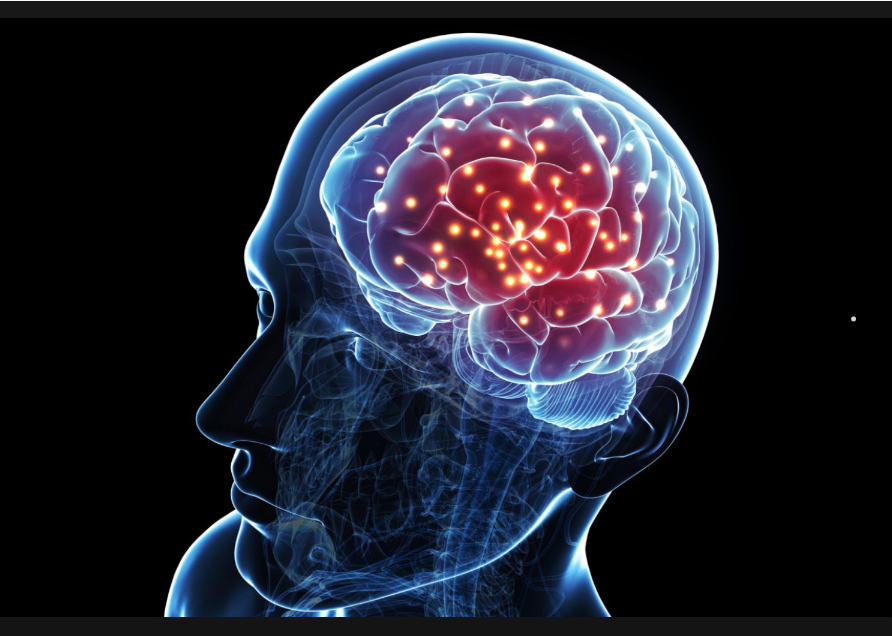
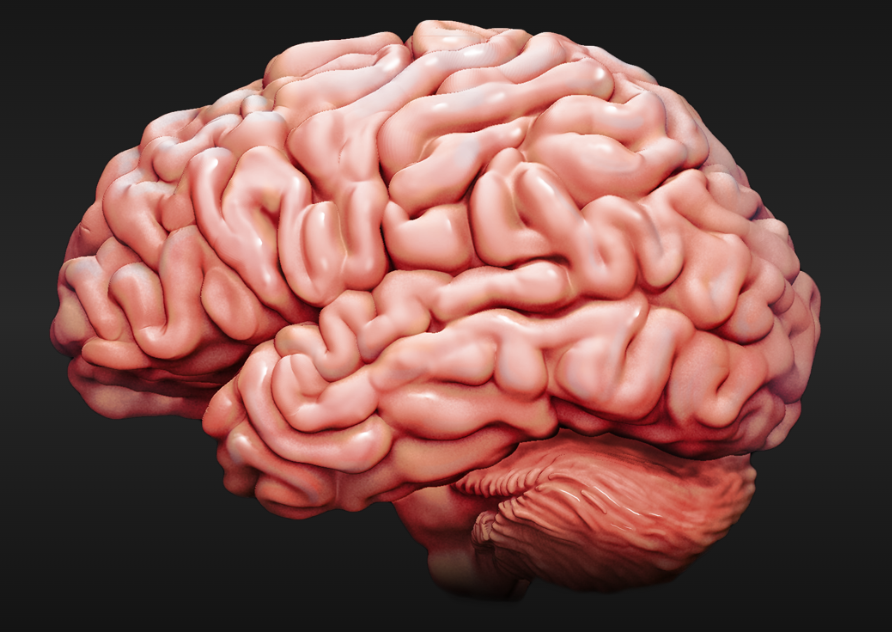
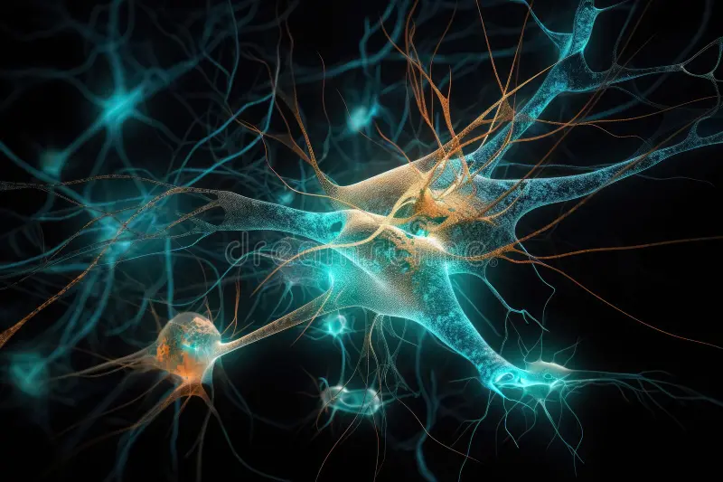
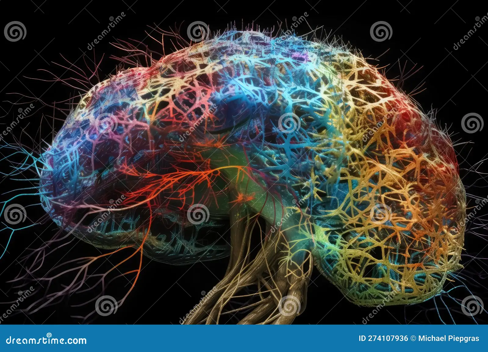

Neurocsience is the scientific study of the nervous system,including the brain,spinal cord,and peripheral nerves.It encompasses an wide range of disciplines,including biology,psycj+hologh, and medicin.Understanding brain function is essential for unraveling the mysteries of human behavior, cognition, and emotion.
The human brain is an incredibly complex organ, consisting of approximately 86 billion neurons that communicate through trillions of synapses. It is responsible for our thoughts, emotions, memories, and movements, making it central to our existence. The brain is divided into various regions, each responsible for specific functions. For instance, the cerebrum, the largest part of the brain, is involved in higher cognitive functions such as reasoning, problem-solving, and decision-making. Meanwhile, the cerebellum plays a critical role in coordinating movement and balance, highlighting the intricate specialization within this remarkable organ.
|  |  |
Neuroplasticity refers to the brains's ability to adapt and recognize itself in response to experience,learning,and injury.This remarkable property allows the brain to form new neutral connections throughout life,enbaling recovery from trauma and adaptation to new environments.
Neuroplasticity is particularly prominent during childhood,a period when the the brain is rapidly developing and learning new skills.However,recent research has shown that adults also retain significant plasticity,allowing them to continue learning anf adapting well into old age.
|  |  |
Illustration of neuroplasticity in the brain.
Mental health is a crucial aspect of overall well-being, affecting how we think, feel, and act. It also plays a signifi such as depression and anxiety, can impact anyone, regardless of age or background.
Maintaining good mental health is essential for a fulfilling life. Here are some key points about mental health: